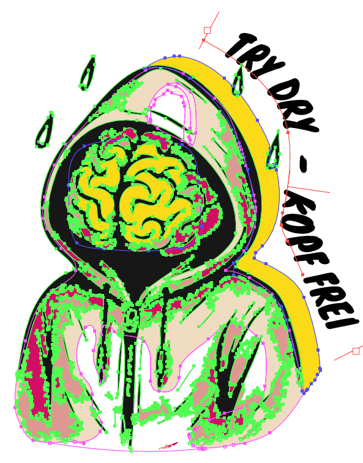
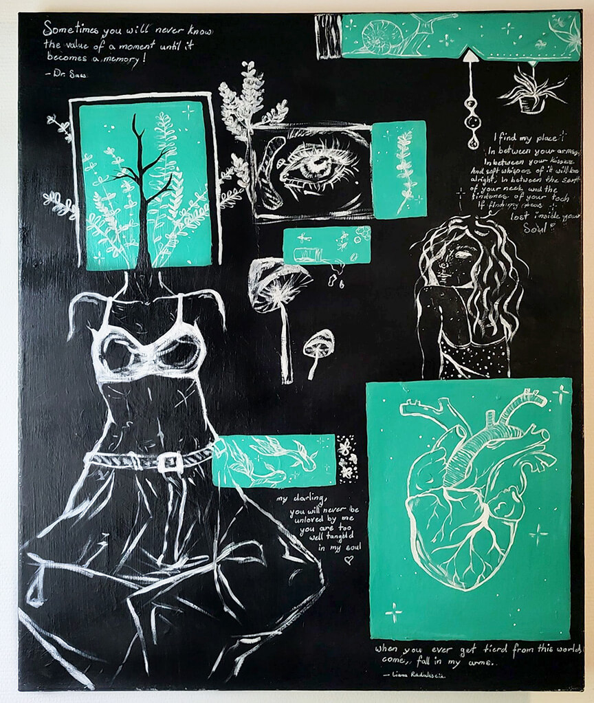
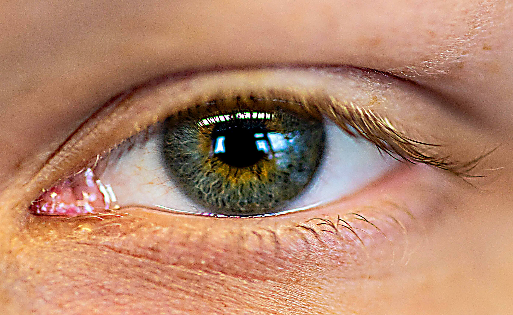

Mediamatikerin in Ausbildung
Michelle Thoma
3. Lehrjahr
Mein Fokus liegt auf der Gestaltung und Umsetzung von digitalen Projekten mit einem klaren Erscheinungsbild. Dabei verbinde ich Design, Analyse und Technik zu durchdachten Lösungen, die sowohl visuell als auch funktional überzeugen.
Ausgewählte Arbeiten
Projekte
Hier findest du eine Auswahl an Arbeiten.

Nuruslums
AIP+ Projekt mit Fokus auf die Weiterentwicklung und Optimierung einer bestehenden Website unter Berücksichtigung von Struktur, Benutzerfreundlichkeit und responsivem Design.
Mehr ansehen →
PrintT-Shirt Design
AIP+ Projekt für das Unternehmen TRY DRY, um ein T-Shirt für verschiedene Altersgruppen und unterschiedliche Geschmäcker zu entwerfen.
Mehr ansehen →
IllustrationenKreative Arbeiten
Eigenständiges Projekt mit Fokus auf modernes Webdesign sowie eine reduzierte, klare Gestaltung.
Mehr ansehen →
FotografieSelektierte Aufnahmen
Kreative Arbeit mit Fokus auf visuelle Gestaltung und ein stimmiges Gesamtbild.
Mehr ansehen → Printmedien
Printmedien
Open Air Kino
AIP+ Projekt mit Fokus auf die Gestaltung eines Werbeplakats und die Entwicklung eines klaren visuellen Konzepts unter Berücksichtigung von Corporate Design und Kundenanforderungen.
Mehr ansehen →
Über mich
Kreativ, strukturiert und digital orientiert
Ich bin Mediamatikerin in Ausbildung und interessiere mich für Webdesign, Gestaltung und digitale Kommunikation. Mir ist wichtig, dass Design nicht nur schön, sondern auch funktional, verständlich und professionell ist.
Kontakt
Lass uns zusammenarbeiten
Ich freue mich über Anfragen, spannende Projekte und neue berufliche Herausforderungen.